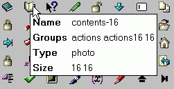

| Home | Man Page | Libraries | Examples | Download | License | Contact |
| ICONS - viewIcons | |||||||
|
| Starting viewIcons |
viewIcons provides a facility to display the contents of ICONS icon libraries. By default, the directory given by the TCL command info library is the default icon library directory for viewIcons.
An alternative default directory can be specified as the first parameter to the viewIcons.tcl command.
Examples:
The following examples assume a Unix/Linux type operating system. Absolute and relative pathnames may be used.
viewIcons.tcl .
Sets the default icon library directory to be the current (working) directory.
viewIcons.tcl /home/adavis
Sets the default icon library directory to /home/adavis.
| Using viewIcons |
When viewIcons is started the icon display area of the screen is blank. If there is an icon library in the default location pressing the View button will display its contents.

The buttons and entry fields at the top of the viewIcons window have the following functions:-
| Name | Type | Description | Default |
| Library | Entry | Fully qualified name of icon library to be displayed. | File tkIcons in info library directory. |
| Browse | Button | Opens icon library file selection dialog box. | N/A |
| Groups | Entry | List of icon groups to be displayed. | Display all groups ("*"). |
| View | Button | Updates window to display specified icon library. | N/A |
| Columns | Buttons | Sets the number of columns for the icon display. | 14 |
| Exit | Button | Exit from viewIcons. | N/A |
The icon library file can be changed by typing a new filename into the Library field then pressing the "Enter/Return" key or the View button. Alternatively, pressing the Browse button will display a file selection dialog box. When a file is selected from the dialog the icon display area will update automatically.
The icon groups displayed can be changed by typing a space separated list of groups into the Groups field then pressing the "Enter/Return" key or the View button.
To display the details of an icon move the mouse pointer to the required icon. The information will be displayed in a "pop up" window:

| Using The Clipboard and Primary Transfer |
To create a complete "image create" command in the clipboard, move the mouse pointer to the required icon then press the left mouse button. There will be a "bleep" to confirm that the command has been generated.
Example:
Clicking on the "folder16" icon of the kde standard library will generate the following command in the clipboard:-
image create photo folder16 -data {
R0lGODlhEAAQAIYAAPwCBAQCBExKTBwWHMzKzOzq7ERCRExGTCwqLARqnAQ+
ZHR2dKyqrNTOzHx2fCQiJMTi9NTu9HzC3AxmnAQ+XPTm7Dy67DymzITC3IzG
5AxypHRydKymrMzOzOzu7BweHByy9AyGtFyy1IzG3NTu/ARupFRSVByazBR6
rAyGvFyuzJTK3MTm9BR+tAxWhHS61MTi7Pz+/IymvCxulBRelAx2rHS63Pz6
/PTy9PTu9Nza3ISitBRupFSixNTS1CxqnDQyNMzGzOTi5MTCxMTGxGxubGxq
bLy2vLSutGRiZLy6vLSytKyurDQuNFxaXKSipDw6PAAAAAAAAAAAAAAAAAAA
AAAAAAAAAAAAAAAAAAAAAAAAAAAAAAAAAAAAAAAAAAAAAAAAAAAAAAAAAAAA
AAAAAAAAAAAAAAAAAAAAAAAAAAAAAAAAAAAAAAAAAAAAAAAAAAAAAAAAAAAA
AAAAAAAAAAAAAAAAAAAAAAAAAAAAAAAAAAAAAAAAAAAAAAAAACH5BAEAAAAA
LAAAAAAQABAAAAfDgACCAAECg4eIAAMEBQYHCImDBgkKCwwNBQIBBw4Bhw8Q
ERITFJYEFQUFnoIPFhcYoRkaFBscHR4Ggh8gIRciEiMQJBkltCa6JyUoKSkX
KhIrLCQYuQAPLS4TEyUhKb0qLzDVAjEFMjMuNBMoNcw21QY3ODkFOjs82RM1
PfDzFRU3fOggcM7Fj2pAgggRokOHDx9DhhAZUqQaISBGhjwMEvEIkiIHEgUA
kgSJkiNLmFSMJChAEydPGBSBwvJQgAc0/QQCACH+aENyZWF0ZWQgYnkgQk1Q
VG9HSUYgUHJvIHZlcnNpb24gMi41DQqpIERldmVsQ29yIDE5OTcsMTk5OC4g
QWxsIHJpZ2h0cyByZXNlcnZlZC4NCmh0dHA6Ly93d3cuZGV2ZWxjb3IuY29t
ADs=
}
When using an X-Windows environment, such as CDE or KDE, the "image create" command is also made available for Primary Transfer. In this case, pressing Shift-Ins will copy the "image create" command.